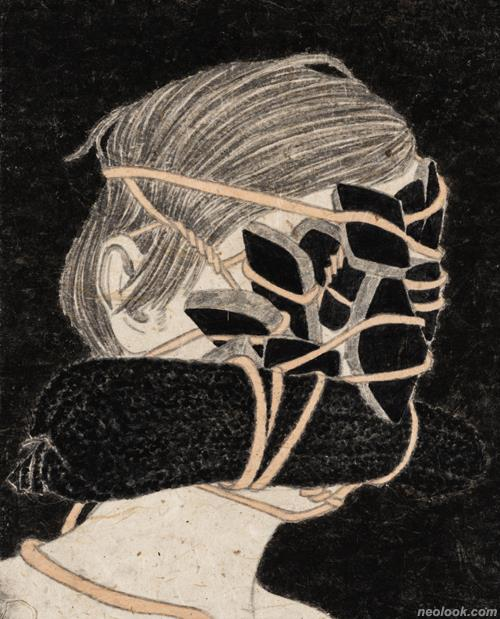

하용주
***1***
무엇을
>>타인의 시선에 대한 공포심을 사회 전반의 문제로 확장하여 그림. 자신의 언행이 타인의 시선을 통해 정의되는 두려움을 그렸다.
어떻게
>>>두려움을 방독면으로 표현함.
왜
>>>나를 감추는 사회적 방어기제인 가면의 외피와 소통장치인 필터가 달린 방독면을 쓰고 힘겹게 걸러진 소통을 하는 인문들을 그리며, 작품의 주제의식은 개인으로부터 모두의 문제로 확장되어 갔다.
작업을 하는 동안 시간의 흐름과 내가 바라본 세상의 외면과 내면의 다양한 면을 발견했기 때문일 것이다.

-하용주_Blind 45-9_장지에 먹, 채색_27.5×22cm_2021
***"보이는 것과 보이지 않는 것", "보여질 것과 보여지지 않을 것" ***
작가의 말
>>>특정 소재로부터 출발한 작업이 형식에 대한 관심으로 전환된 것은 「Blind」(2013~) 연작부터라고 할 수 있다. Blind는 눈이 먼, 깨닫지 못하는 등의 의미로, 가려지거나 익숙하지만 낯선 구조의 모순에 대해 기존 작업내용과 연계하며, 사회의 특정 사건들을 바탕으로 공간과 상황, 이미지들이 함축된 작업이다.
시각적인 재현과 분위기에 의존하는 것을 넘어, 보이는 것을 매개로 보이지 않는 것을 보는 사의(寫意)적 심상표현주의 태도를 취하며, 직접적인 것과 은유되는 것, 화면을 구성할 때의 대상의 위치와 각도, 붓의 운용과 안료의 선택, 보여지는 방식에 대한 실험을 「Blind」, 「주관적 구조」 연작 회화로 선보이고 있다.
「주관적 구조」 연작은 '건조한', '납작한' '눅눅한' 등의 명확하지 않고 규정되지 않은 제목들을 가진 여러 조각의 평면 작품들로 구성된다. 대형 작품을 구성하는 이미지, 체계, 느낌 등이 여러 조각의 작은 작품들로 파생되어 보여지는 화면의 구조를 제시한다. 이 주관적 조합은 또 다른 작품으로 재구성될 수 있는 여지를 갖고 있으며 제목에서 언급하듯 화면의 조형이 규정되어지길 거부하는 회화다.
나는 지금까지 진행해온 연작들을 통해 나와 타자, 원활한 소통과 걸러진 소통 사이의 수많은 레이어의 위장을 부정하면서도 개인과 집단, 구조, 체계 안에서의 익숙하며 필연적인 상황을 인정하기도 한다. 사회 안에서 당신이 속한 시간, 공간, 상황, 입장에서 어떻게 바라볼 것인가?
-하용주_건조한 1_장지에 먹, 채색_142×200cm_2021
-하용주_납작한 1_장지에 먹, 채색_200×142cm_20